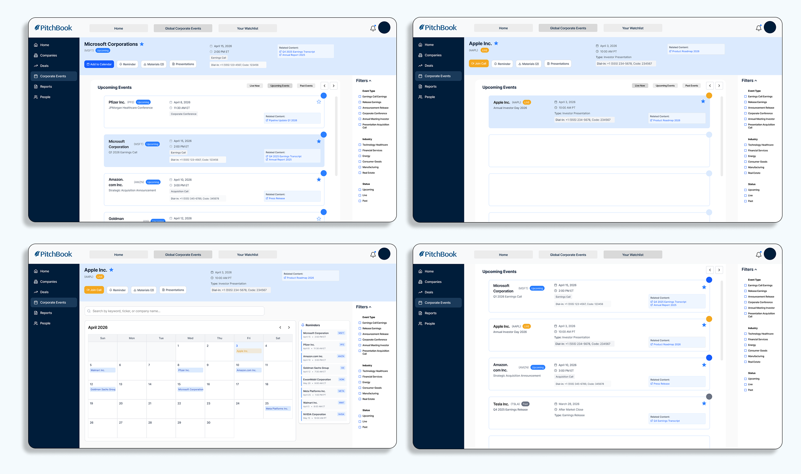

pitchbook: corporate events
a redesigned home for corporate events on the pitchbook platform, so investors never miss the calls that move their portfolios.

overview
corporate events was a semester-long project with washu ux club, sponsored by pitchbook — a platform that venture capital firms, private equity firms, investment banks, and corporates use to research private and public markets. pitchbook came to us with a real product brief and paired our four-person team (violet, lydia, sage, and me) with one of their senior product designers, who met with us weekly to walk through our work and keep us grounded in how pitchbook's users actually think. i worked across research, information architecture, and final ui, helping take the project from a blank brief to a shippable-feeling redesign.
pitchbook's brand colors
beyond handing us their palette, pitchbook was clear that our final deliverables needed to stay consistent with their existing design system — the same navy-and-blue hierarchy, the same accent colors used for status and emphasis, and the same type and component patterns already live on the platform, rather than anything new we might have preferred. every screen in the solution below was built to snap into pitchbook's system, not sit apart from it.
the problem
pitchbook's users — investors, analysts, and bankers — rely on corporate events like earnings calls, conferences, and investor presentations to make time-sensitive decisions. the problem: that information lived across disparate sources outside (and even inside) the platform, which cost people time and led to missed calls they actually cared about. pitchbook's ask was straightforward but ambitious — give users a single, reliable home for corporate events, one where they could find upcoming and historic events, tell at a glance which ones mattered to them, join a live call in one click, and never lose track of something they wanted to catch. get that right, and pitchbook believed it would deepen platform usage and make corporate events a real part of how their users work every day.
process
research

- 1 alphasense
- 2 s&p capital iq
- 3 preqin
- 4 workday
numbered top to bottom, matching the stack above
we opened with a competitive audit of four platforms that handle corporate events or financial data in some form. alphasense, preqin, and s&p capital iq were our direct competitors; workday, an indirect one, gave us a useful outside view on enterprise information design.
- alphasense — a clean event dashboard with calendar integration and strong filtering across event types, though a document-centric view buried live vs. upcoming status.
- preqin — leaned hard on visual contrast to signal event status, which pointed us toward a similar "live now" treatment of our own.
- s&p capital iq — offered sophisticated filtering and lived in two places at once, the company profile and a dedicated events hub — a pattern we borrowed directly.
- workday — an indirect reference, but its profile-integrated event view and strong calendar precedent shaped how we thought about displaying dates.
those four audits turned into three concrete design opportunities: build a dedicated event hub with real filtering by date, type, company, and sector; use contrast and depth so a live event reads instantly without scanning a whole list; and let corporate events live in two places — inside a company's profile and in one global hub — since that's how pitchbook's power users actually work.
to keep the work grounded in real workflows, we built two personas out of that research:
alex chen
credit analyst · bulge-bracket bank
alex covers 15 tech companies and attends every earnings call. he needs to efficiently compare event data, download materials, and set reminders across multiple events simultaneously.
- prep quickly before each earnings call
- download transcripts & slides fast
- set reminders for multiple events at once
- no side-by-side event comparison
- material downloads not prominently surfaced
- reminder system is one-at-a-time only
lisa rock
investment manager · mid-size hedge fund
lisa manages a portfolio of 40+ public equities and relies on earnings events to time buy/sell decisions. she needs real-time updates and fast post-call transcript access.
- track all portfolio events in one view
- never miss a live call
- access transcripts instantly post-event
- no aggregated portfolio events view
- live status isn't obvious
- transcript access is buried
the major pain points
six critical pain points identified through user interviews, surveys, and competitive benchmarking
iteration

we started low-fidelity, sketching out where corporate events should even live in the platform (a new tab? a new section on the company profile? both, it turned out) and how someone would move between an all-events view, a single company's events, and their own reminders. our mentor pushed us early to stop designing three separate flows and agree on one shared system — colors, buttons, type — before going any further, which saved us from a much messier merge later on.

from there we moved into mid-fidelity, testing a tabbed all / upcoming / past structure, a toggle between list and calendar views, and a right-hand sidebar for filters and reminders. every week we brought this back to our pitchbook mentor, and one piece of feedback stuck with us the most: pitchbook's branding wasn't a suggestion, it was a requirement — which sent us back to rebuild several components so they actually matched pitchbook's system instead of just borrowing its color palette.
the solution
the final design gives pitchbook users one home for corporate events: a redesigned events tab with all / upcoming / past filtering, a calendar toggle, a docked reminders panel, and a full event-detail view — plus the small details our research called out, like an unmissable "live now" badge and named, one-click document downloads.


reflection
-
01
build a shared system early — starting with four separate versions made it hard to merge later. agreeing on one design system (colors, buttons, type) from day one would have saved us real time.
-
02
respect brand rules from the start — pitchbook's branding wasn't a suggestion, it was a requirement. learning those rules early would have meant less work redone later to fit their identity.
-
03
collaborate, don't work in silos — building separate versions in isolation led to clashing styles. working together in the same file pushed us from four "my designs" toward one unified solution.
-
04
stay curious and ask questions — we tried not to assume we had all the answers, and got in the habit of asking "why" and "how does this fit the brand" before a small decision turned into a last-minute problem.